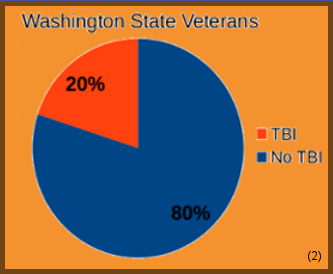

Software can be a great tool to help manage the symptoms of Traumatic Brain Injury
and is easily accessible and cost efficient.
Tramatic Brain Injury
TBI in summary can be any injury to the brain that causes mild to
extreme symptoms and disabilities including, but not limited to
memory loss, headache, PTSD, and paralysis. TBI is especially relevant
to veterans due to the possibility of contact, trauma and injury they
face during their service. Due to traumatic experiences such as watching
death, seeing explosions and the constant stress of being in war, a great
population of veterans return home with Post Traumatic Stress Disorder (PTSD).

The pie chart above shows that 20% of Washington State veterans
who have served have experienced a Traumatic brain Injury.
Software Types
There are many different types of software applications that have the goal
of aiding those diagnosed with a Traumatic Brain Injury. They are available
on mobiles phones, websites, and downloadable programs. These types of software
can often go unnoticed, such as the ease of access options available on Windows
machines and similar accessibility options on most mobile devices.
Max Impact, which is a free mobile application for Android or Apple devices provided
by the Washington Department of Veteran Affairs, and Rehacom, a paid service that
is designed to assist therapists when treating patients are two types of software that
will be explained.
Max Impact
offers help in a variety of different areas:
- • Voice guided relaxation exercises
- • Simple memory games
- • TBI screener
- • Where to seek additional help
Rehacom, a robust cognitive training tool:
- • Powerful tool used by therapists
- • Can help with many other TBI symptoms
- • Available in over 20 different languages
Other software for TBI:
•
Bungalow: Reading & Speech
•
Lash & Associates: Concentration, Attention & Memory
•
HappyNeuron: Cognitive rehabilitation software
•
mTBI: Mobile TBI pocket guide
This website is a redesign of a graphic
that was created by Group 1 in English 402 for the R&D project taught
by Elijah Coleman at Washington State University
Click here to view the old graphic
Back to top